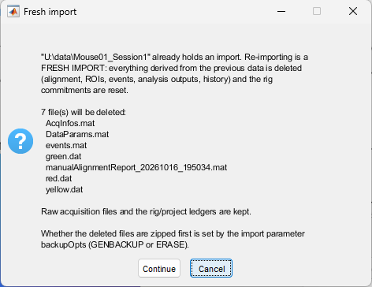

Imports raw imaging data acquired with the LabeoTech's optical imaging systems.
Description
This function reads multi-channel imaging data stored in binary files (img_xxxx.bin) together with the acquisition information file (info.txt) of an imaging session. The signal of each illumination channel is saved separately in a .dat file, whose header describes its axes, size and frame rate. The acquisition metadata are saved in one AcqInfos.mat file in the SaveFolder. Optional parameters perform spatial and temporal binning. In DataViewer, this function runs from File > Import > from .bin. Stimulation triggers are not imported by this function; use getEvents.
When info.txt has no Camera Model entry, the camera model D1024 is assumed (it selects how dropped frames are detected and filled), with the warning Umitoolbox:ImagesClassification:CameraModelMissing.
Output
The ImagesClassification function creates one or more of the following .dat files:
Red
Green
Yellow
Speckle
fluo / fluo_475 / fluo_567
and the file AcqInfos.mat. AcqInfos.mat does not hold rig information: the rig of the folder is recorded in its folder rig ledger (UMITRigLedger.json).
Rig and camera coregistration
Single-camera data do not use a rig. A first import records the folder as "no rig" in its rig ledger. A re-import keeps the rig binding the folder already has. To process the folder with rig-dependent functions such as HemoCompute, bind a rig in DataViewer (Management > Rig > Folder Rig).
Dual-camera data use the Active rig of the rig library and its active camera coregistration. The transform is applied to the second camera, and the folder is bound to the Active rig with that coregistration.
If there is no Active rig, if the Active rig has no active coregistration, or if the transform cannot be applied, the dual-camera data are imported without coregistration. The warning Umitoolbox:ImagesClassification:ImportedWithoutCoregistration gives the reason and asks you to set an Active rig with an active coregistration in the Rig Manager, then to re-import. A new folder is then recorded as "no rig"; a folder that was already bound keeps its optics binding, without a coregistration.
A calibration that turns out to be wrong is fixed with Recalibrate in the Camera Coregistration tool, followed by a re-import of the raw data. There is no option to import dual-camera data without the active calibration.
Several Active rigs, or an invalid folder rig ledger, stop the import before the SaveFolder is touched. No rig is ever created by an import.
Importing into a used Save Folder (fresh import)
An import into a SaveFolder that already holds an import (or files derived from one) is a fresh import: the folder is reset so that it is equivalent to a first import.
Deleted (top level of the SaveFolder): the files that UMIT knows it creates, namely the imported .dat files and every other .dat, AcqInfos.mat, DataParams.mat (including any image alignment), .umt and .roi files, events.mat, processing history (dataHistory.mat, pipeLog.mat), alignment and motion-correction reports, ROI CSV exports, TIFF exports of the folder's channels, every output recorded in the processing history, and temporary leftovers.
Kept: the raw acquisition files (.bin, info.txt, Comments.txt, snapshots, input TIFF files), the rig and project ledgers, backup .zip files of earlier imports, subfolders, and any file UMIT does not recognize. Unknown files are listed before the import, so you can see what stays.
Rig: the folder keeps its rig binding (or its "no rig" record), but every rig commitment (optics, coregistration, filter sets) is reset and the reset is recorded in the rig ledger. A dual-camera re-import binds the folder to the current Active rig, whatever rig it used before, without a conflict. A folder that once had a rig conflict keeps its "had conflict" mark.
Project: a folder bound to a project stays bound; the fresh import is recorded in its project ledger. A new alignment can be estimated and applied afterwards.
The backupOpts parameter decides whether the deleted files are kept in a zip file (see below). In DataViewer, File > Import > from .bin first shows an informative dialog that lists what will be deleted and kept, with Continue and Cancel; the backup choice then comes from backupOpts. A direct MATLAB call with backupOpts empty shows a dialog with Zip, delete and import, Delete and import and Cancel (Cancel stops with Umitoolbox:DataImport:freshImportCancelled). Pipelines are not refused for a used SaveFolder: they use GENBACKUP by default.

DataViewer lists what a fresh import deletes before it starts.
Parameters
The parameters of this function are the following:
Performs binning on each frame of the imported channels using a bicubic interpolation. The BinningSpatial values represent the scale factor that a frame is divided by. For example, for a recording with original frame size of 1024 by 1024 pixels, a BinningSpatial value of 2 will result in a frame of size 512 by 512 pixels.
A BinningSpatial value of 1 equals to no binning.
Performs binning across frames (i.e. over the time dimension) using a linear interpolation. The BinningTemp values represent the scale factor for the temporal dimension of a recording. For example, for a recording with original frame rate of 10Hz, a BinningTemp value of 2 will reduce the number of frames in half, resulting in a frame rate of 5Hz.
A BinningTemp value of 1 equals to no binning.
Used only when the SaveFolder already holds an import (see fresh import); ignored for an empty SaveFolder.
GENBACKUP: the files to delete are first zipped into bkp_<date>_<time>.zip in the SaveFolder. The zip is kept.
ERASE: the files are deleted without a zip.
In a direct MATLAB call, the default is empty (a dialog asks), and any other text is used as the name of the zip file.